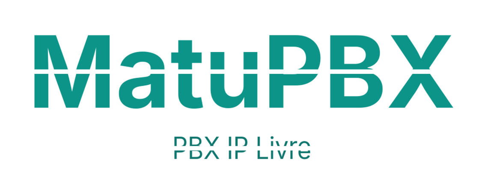

Ramais e troncos
Gerenciamento SIP/IAX2 pela web, com gravação automática de config no Asterisk.

Sistema PBX web completo — fork livre do SNEP 3 com todas as funcionalidades, Asterisk 20 LTS, PHP 8 e uma ISO BigLinux pronta para instalar.
O MatuPBX preserva o conjunto completo do SNEP 3.06.2 — ramais, troncos, IVR, filas, billing e relatórios — com identidade visual renovada em teal.
Gerenciamento SIP/IAX2 pela web, com gravação automática de config no Asterisk.
Menus de voz interativos, filas de atendimento e painel de agentes (Qmanager).
Controle de custos por tronco e rota, minutagem e relatórios de uso.
Chamadas, ranking, sintético, analítico e por serviços — exportáveis pela interface.
Retorno de chamada e portabilidade numérica integrados ao fluxo de rotas.
Português, inglês e espanhol — com auditoria de usuários e gravações baixáveis.
Base BigLinux, Asterisk LTS ainda mantido e PHP 8 com Zend Framework 1 compatível.
| Componente | Versão / escolha |
|---|---|
| Distribuição | BigLinux (perfil oficial iso-profiles) |
| Asterisk | 20.22.0 LTS — chan_sip exigido pelo SNEP; removido desde o 21 |
| PHP | 8.x + zf1-future |
| Banco | MariaDB / MySQL (ODBC para voicemail) |
| Web | Apache httpd + mod_php |
| App | github.com/rafaelmaturino/matupbx |
#0D9488#0F766E#115E59#134E4AA ISO é publicada como release no GitHub. Grave em um pendrive (Rufus, BalenaEtcher ou dd) e inicialize no modo Live ou instale.
.sha256 da release e confira:
sha256sum -c *.iso.sha256Se a release ainda não estiver publicada, acompanhe o build no Actions.
http://ip-do-servidor/matupbx com admin / admin123.